| アイコン |
名前 |
修復 |
詳細 |
 |
岩 |
× |
初期アイテム。これを捨てるとアイテムの採取がしづらくなる。殴れるので武器としても使える。 |
| 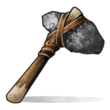 |
石の手斧 |
〇 |
石で作られた斧、木の採取に特化してる。 |
| 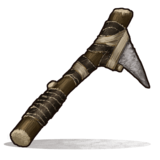 |
石のツルハシ |
〇 |
石で作られたツルハシ、石の採取に特化している。 |
| 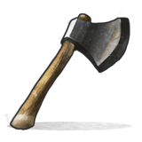 |
鉄の手斧 |
〇 |
最も木の採取量が多い斧。 |
| 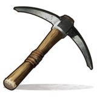 |
ツルハシ |
〇 |
石の採取効率が最も良いツルハシ。 |
| 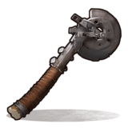 |
廃材の斧 |
〇 |
木を切るよりドラム缶とかを壊すのに向いている。 |
 |
廃材のアイスピック |
〇 |
ツルハシより叩くのが早く、鉱石を採取するのに向いている |
| 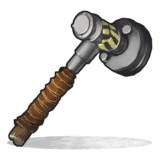 |
廃材のハンマー |
〇 |
主にドラム缶などを破壊するのに向いている。 |
| 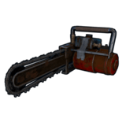 |
チェーンソー |
〇 |
斧よりも早く木が切れるツール。ただし音が響くし燃料もいるので注意 |
| 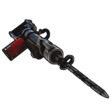 |
削岩機 |
〇 |
ツルハシよりも早く採掘ができるツール。耐久が減ったらワークベンチでエアーを補給する必要がある |
| 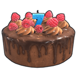 |
バースデーケーキ |
× |
Rust 7周年おめでとう！！たたくのもよし！食べるのもよし！ |
| 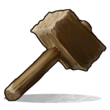 |
ハンマー |
× |
建物を強化、修復するのに必要不可欠なツール。建物にカーソル合わせて右クリックで建築オプションが開ける。 |
| 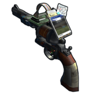 |
Garry's Mod ツールガン |
× |
Garry's Mod15周年を記念してGarry's Modを所持してる人が作れるアイテム。
使い方はハンマーと同じだがコストに金属片が必要となるので序盤で作るメリットが薄い |
| 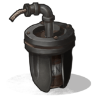 |
地質調査用爆薬 |
× |
現在は管理者権限以外での入手は不可 |
| 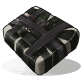 |
時限爆弾 |
× |
建物へ最高ダメージを与えることのできる爆発物。通称「C4」 |
| 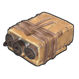 |
梱包爆薬 |
〇 |
C4の劣化版といったところ威力はそこそこだがコストはC4よりはるかに安い |
 |
携帯型無線送信機 |
× |
無線周波数を設定して、無線で電気をON、OFFできる |
| 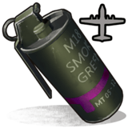 |
サプライシグナル |
× |
投げると紫の発煙が発生しその位置にエアードロップを呼ぶことができる。(ドラム缶からドロップしたとの報告あり) |
| 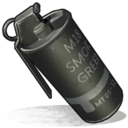 |
スモークグレネード |
× |
投下付近にスモークを展開し姿を消すことが可能。範囲は土台3枚ちょっと。展開時間は50秒 |
| 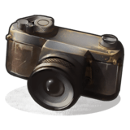 |
カメラ |
× |
はいチーズ！ |
| 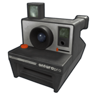 |
インスタントカメラ |
× |
撮影すると「写真」が写り、
その写真をフォトフレームにはめることができる※DLC「Rust - Sunburn Pack」を所持していないとクラフト不可能 |
 |
フラッシュライト(手持ち) |
〇 |
持つと暗いところを照らしてくれる優れもの。しかし逆に夜に持って行動すると目立つので注意 |
| 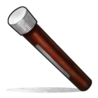 |
フレア |
× |
12/22のアップデートで復活。投げた場所を2分間照らしてくれるアイテム |
| 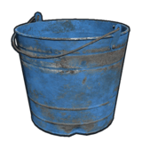 |
水バケツ |
〇 |
汲んだ水をばら撒くことによって火を鎮火することができる。 |
| 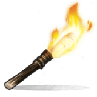 |
松明 |
〇 |
初期アイテム。右クリックでつけたり消したりできる。また武器としても使用可能。 |
| 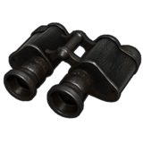 |
双眼鏡 |
× |
4倍スコープよりも遠くを見れるツール。敵拠点の偵察とかに向いてる |
| 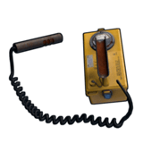 |
放射能測定器 |
× |
科学者AIが所有している物。一般プレイヤーには入手不可なのと使い道がない |